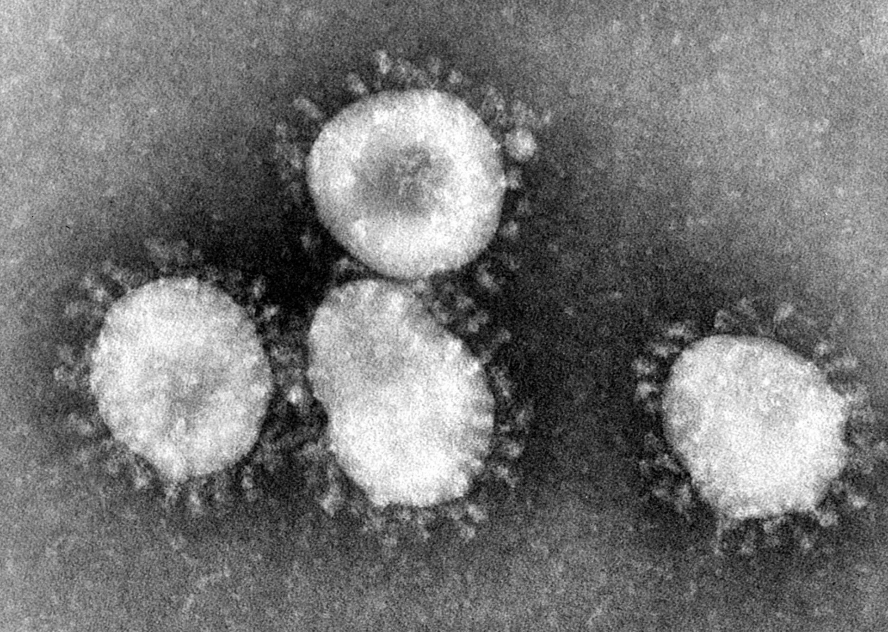

What is Coronavirus or COVID-19?
The COVID-19
Coronavirus disease 2019 (COVID-19) is an infectious disease caused by severe acute respiratory syndrome coronavirus 2 (SARS coronavirus 2 or SARS-CoV-2), a virus closely related to the SARS virus. The disease was discovered and named during the 2019–20 coronavirus outbreak. Those affected may develop a fever, dry cough, fatigue, and shortness of breath. A sore throat, runny nose or sneezing is less common. Cases can progress to pneumonia and multi-organ failure. California announced its first coronavirus-linked death Wednesday, bringing the death toll in the United States to 11. The death, which occurred in Placer County in Northern California, is the first U.S. coronavirus fatality to occur outside of Washington state, where a 10th death was confirmed Wednesday.
Gov. Gavin Newsom declared a state of emergency in California, and he requested that a cruise ship be held off the coast after confirmation that a number of passengers and crew members aboard had developed symptoms consistent with coronavirus disease. Los Angeles County declared a local health emergency as officials confirmed six new cases of coronavirus there, and nine new cases were confirmed in New York. American workers face increasing disruptions to their routines as companies, schools and local governments implement precautions to curb the outbreak, with many firms restricting travel or weighing work-from-home arrangements. In China, the outbreak appeared to be easing. Far more new cases were reported outside the country than within, suggesting that Chinese authorities’ draconian efforts to curb transmission may be paying off at home, even as the casualty count mounts elsewhere. The World Health Organization said Tuesday that covid-19, the disease caused by the virus, has killed about 3.4 percent of those diagnosed with the illness — a higher rate than experts previously estimated.
What are the Symptoms?

Symptoms
The following symptoms may appear 2-14 days after exposure.
- Shortness of breath
- Fever
- Cough
Reported illnesses have ranged from mild symptoms to severe illness and death for confirmed coronavirus disease 2019 (COVID-19) cases.
How is Coronavirus transmitted?
How it's Transmitted
The virus is thought to spread mainly from person-to-person.
- Between people who are in close contact with one another (within about 6 feet).
- Through respiratory droplets produced when an infected person coughs or sneezes.
Spread from contact with infected surfaces or objects
These droplets can land in the mouths or noses of people who are nearby or possibly be inhaled into the lungs. It may be possible that a person can get COVID-19 by touching a surface or object that has the virus on it and then touching their own mouth, nose, or possibly their eyes, but this is not thought to be the main way the virus spreads.
Prevention

You can protect yourself and help prevent the spread of the virus to others
DO:
- Wash your hands regularly for 20 seconds, with soap and water or alcohol-based hand rub
- Cover your nose and mouth with a disposable tissue or flexed elbow when you cough or sneeze
- Avoid close contact (1 meter or 3 feet) with people who are unwell
- Stay home and self-isolate from others in the household if you feel unwell
DON'T:
- Touch your eyes, nose, or mouth if your hands are not clean
- Wear a mask if you're not sick because facemasks may be in short supply and they should be saved for caregivers.